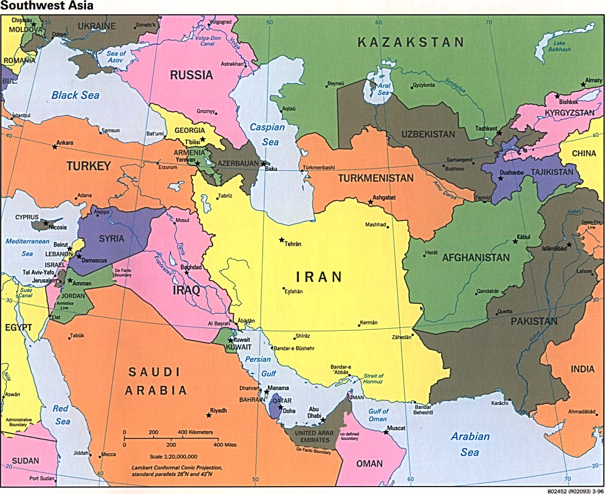
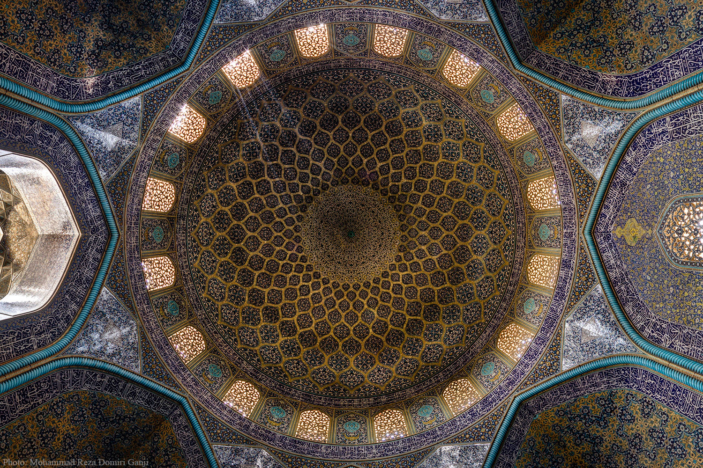
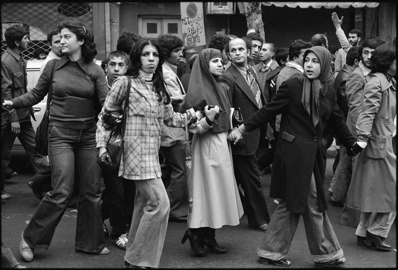
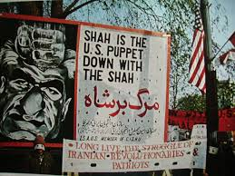
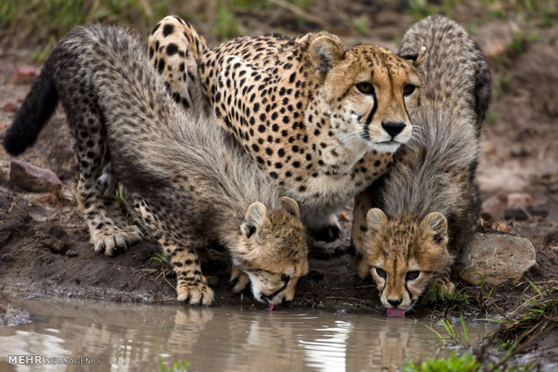
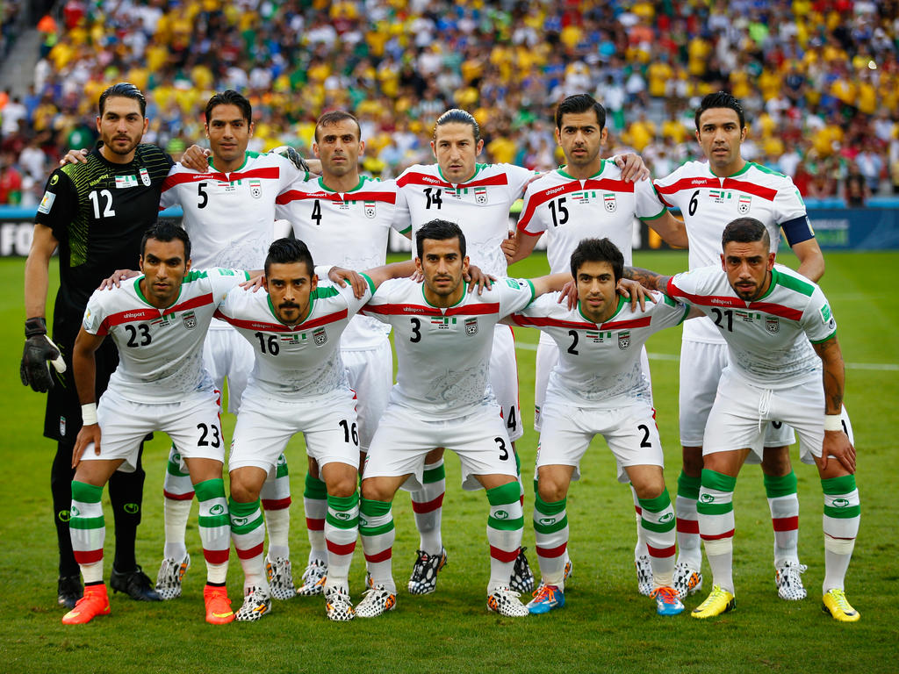

An Extremely General Introduction to Iran
Sepideh Saeedi
July 31 2017
This is an example.
Iran ایران
- Population: 80.28 million
- Capital : Tehran 
Prehistoric civilizations

Achaemenid Empire

Antiquty Empires


Islamic Era

The Modern Iran
 modern
modern
Have you ever wondered where the animosity between the American and Iranian government come from?

1953 Coup

1979 Revolution
 
Peace not War

Geography

Persian Cheetah

Cuisine

Sports

Thank you!
Hope to see you in Tehran one day!